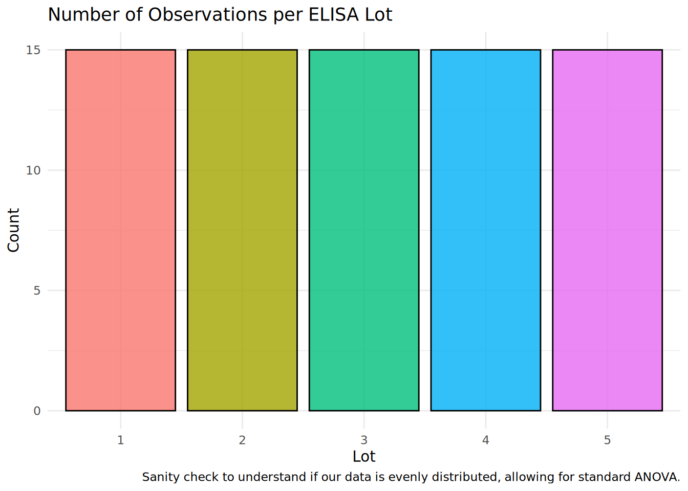
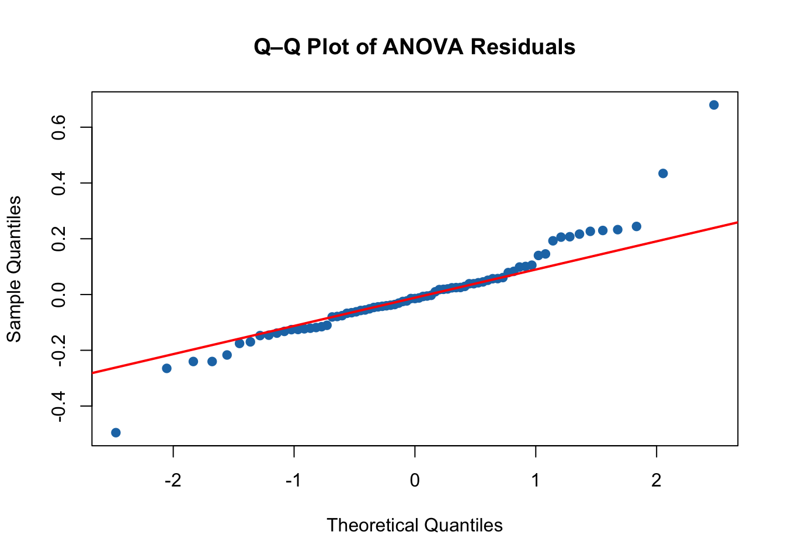
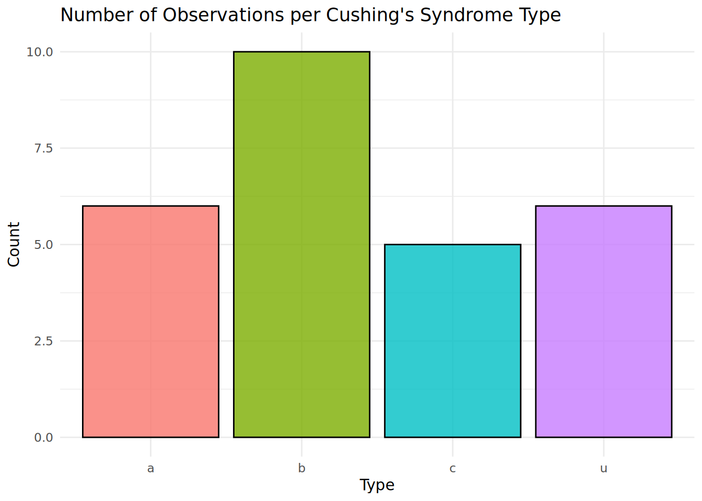
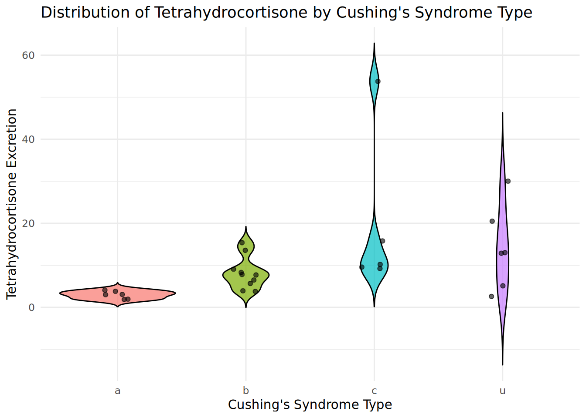

# Loading our datasets centrally
# load Elisa dataset
ELISA_df <- read.csv("ELISA.txt")
# Confirm factor structure
ELISA_df$Lot <- as.factor(ELISA_df$Lot)
# Load low birth weight data
lowbwt_df <- read.csv("lowbwtHW7.csv")
# Load Cushings dataset from MASS package
mass_df <- as.data.frame(Cushings)Homework 7 - Biostatistics
Dylan Renard
Professor Proschan & Professor Nason
JHU Biostatistics
July 3rd, 2025
Homework 7
In this homework, we use ANOVA to test whether Optical Density values differ across ELISA lots and appply Holm’s method for pairwise comparisons. We also calculate the sample size needed to detect a meaningful difference with high power, and assess power given a fixed group size. Finally, we explore real-world datasets (Cushings, low birth weight infants) to apply t-tests and ANOVA, reinforcing concepts around multiple comparisons and variance analysis.
Part 1 Coding Questions
Q1:
Download Elisa.txt data, and test whether there are differences between Lots with respect to mean Optical Density. If appropriate, compare each pair of lots using t-tests with Holm’s adjustment. What can you say from this?
library(ggplot2)
# Bar plot of number of observations per Lot
ggplot(ELISA_df, aes(x = Lot, fill = Lot)) +
geom_bar(color = "black", alpha = 0.8) +
labs(
title = "Number of Observations per ELISA Lot",
x = "Lot",
y = "Count",
caption = "Sanity check to understand if our data is evenly distributed, allowing for standard ANOVA."
) +
theme_minimal() +
theme(legend.position = "none")
What is our Hypothesis?
First we define the null hypothesis (H₀) in this instance, that the mean Optical Density is the same across all ELISA lots or in other words, there is no difference between lots.
The alternative hypothesis (H₁) in this experiment is that at least one lot has a mean Optical Density that differs from the others.
What is ANOVA?
Analysis of Variance (ANOVA) is a statistical method used to determine whether there are significant differences between the means of three or more independent groups. It does this by comparing the variability between group means to the variability within groups, producing an F-statistic to assess whether the observed differences are likely due to chance. The F-statistic measures the ratio of variability between group means to the variablity within groups; a larger value suggests greater evidence that at least one group mean differs significantly.
Why use ANOVA?
We can use ANOVA to compare mean Optical Density values across ELISA lots because several key assumptions are reasonably met. First, the outcome variable (Optical Density) is continuous, and the grouping variable (Lot) is categorical with more than two independent levels.
The assumption of independence holds because each sample was drawn from a separate measurement run, meaning that the Optical Density of one sample does not influence another.
The assumption of equal variance (homogeneity of variance) can be considered reasonable here by prior validation of lab protocol or can be assessed using a diagnostic Q-Q plot or Levene’s test.
The Q-Q plot visually compairs the distribution of residuals to a normal distribution, helping identify deviations such as skewness or heavy tails that may affect variance.
Levene’s test provides a statistical method to assess whether variances are equal across groups, regardless of normality, making it especially useful in real-world data.
While these tools were not covered in lecture, they represent important extensions for validating assumptions and ensuring the reliablilty of lab data prior to downstream statistical analysis. Links to relevant articles on this subject can be found in the sources section.
Lastly, the assumption of normality of residuals can be reasonably assumed due to the moderate sample size (n = 75), which invokes the Central Limit Theorem, making the ANOVA robust to minor deviations from normality.
ANOVA Analysis in R
# Fit a one-way ANOVA model
# to test whether the mean Optical_Density differs across levels of Lot
# Our alpha value will be 0.05,
# so if the p-value is significant (< 0.05)
# we will then move onto to compare each pair of lots
# using t-tests with Holm's adjustment
anova_result <- aov(Optical_Density ~ Lot, data = ELISA_df)
# Extract and coerce the summary to a data frame
anova_table <- as.data.frame(summary(anova_result)[[1]])
# Rename columns for clarity
colnames(anova_table) <- c(
"Degrees of Freedom",
"Sum of Squares",
"Mean Square",
"F Value",
"P Value"
)
# Round numeric values to 3 decimal places
anova_table <- anova_table %>%
mutate(across(where(is.numeric), ~ round(.x, 3)))
# Display using DT with just the body
DT::datatable(
anova_table,
rownames = FALSE,
options = list(
dom = 't',
ordering = FALSE,
pageLength = nrow(anova_table)
),
callback = JS(
"table.columns().every(function() {
$(this.header()).css('text-align', 'left');
});"
) # Helped align wonly header
) %>%
DT::formatStyle(
columns = names(anova_table),
'text-align' = 'left'
)Interpreting initial ANOVA results:
*The F-statistic of 3.892 with a p-value of 0.007 indicates a statistically significant difference in mean Optical Density across the five ELISA lots at the α = 0.05 significance level.
The degrees of freedom for Lot (4) and residuals (70) confirm a comparison between 5 groups (k = 5) and 75 total observations (n = 75).
Since the p-value is below 0.05, we reject the null hypothesis and conclude that at least one ELISA lot has a different mean Optical Density from the others.
# Since ANOVA is significant, perform pairwise t-tests with Holm’s adjustment
pairwise_result <- pairwise.t.test(
x = ELISA_df$Optical_Density,
g = ELISA_df$Lot,
p.adjust.method = "holm"
)
# Extract p-value matrix, replace NAs with empty string
pairwise_matrix <- round(pairwise_result$p.value, 4)
pairwise_matrix[is.na(pairwise_matrix)] <- ""
# Convert matrix to data frame
pairwise_df <- as.data.frame(pairwise_matrix)
# Add row names as a column for clarity
pairwise_df <- tibble::rownames_to_column(pairwise_df, var = "Comparison Lot")
# Display using DT with center-aligned columns
DT::datatable(
pairwise_df,
rownames = FALSE,
options = list(dom = 't', ordering = FALSE),
caption = "Holm-adjusted pairwise p-values between ELISA lots"
) %>%
DT::formatStyle(
columns = names(pairwise_df),
`text-align` = "left"
)Interpreting pairwise t-test results:
After the ANOVA indicated a significant difference in mean Optical Density across the five ELISA lots (F(4, 70) = 3.892, p = 0.007), we conducted post hoc pairwise t-tests using Holm’s adjustment to control for multiple comparisons.
Holm’s method was applied to control the familywise error rate, which is the probability of making at least one Type I error across all pairwise tests. It is less conservative than the Bonferroni method while still providing strong error control, making it well-suited for a moderate number of comparisons like the ten made here.
The results show that most pairwise p-values were not statistically significant (p > 0.05), except for the following comparisons:
- Lot 2 vs. Lot 5 (p = 0.0044), which is statistically significant
- Lot 3 vs. Lot 5 (p = 0.0401), which is borderline significant
All other comparisons resulted in p-values greater than 0.4, indicating no statistically significant difference in Optical Density between those pairs after adjusting for multiple testing.
Conclusion
Although the overall ANOVA confirmed that differences exist among the lots, the Holm-adjusted pairwise t-tests reveal that Lot 5 differs meaningfully from Lots 2 and 3. These findings help identify specific sources of variation in Optical Density and can inform follow-up steps for quality control or experimental review.
Q-Q Plot for the ;) plot
# Extract residuals from the ANOVA model
residuals_q1 <- residuals(anova_result)
# Generate Q–Q plot to visually assess normality
qqnorm(residuals_q1,
main = "Q–Q Plot of ANOVA Residuals",
pch = 19, col = "#1f77b4")
qqline(residuals_q1, col = "red", lwd = 2)
The Q–Q plot shows how the residuals from the ANOVA model compare to a theoretical normal distribution. If the points lie approximately along the red reference line, this supports the assumption of normality required for ANOVA. Minor deviations are expected and acceptable due to sample size (n = 75), and the Central Limit Theorem provides additional robustness.
Q2:
The researcher then tells you that moving forward, they are only going to be comparing two lots at a time (new vs old), but that it will be important that if the lots are different by 0.1 or more they want to be very confident they will be able to detect that. She asks you how many samples per lot they should analyze in order to have 99% power to detect a difference of 0.1 or greater? Assume that the standard deviation within lots is 0.08 and that you will use an alpha=0.05.
# Parameters
delta <- 0.1 # Minimum detectable difference
sd <- 0.08 # Standard deviation
power_target <- 0.99
alpha <- 0.05
# Calculate required sample size per group
sample_calc <- power.t.test(
delta = delta,
sd = sd,
sig.level = alpha,
power = power_target,
type = "two.sample",
alternative = "two.sided"
)
sample_calc$n # Recommended sample size per group[1] 24.52528To detect a difference of 0.1 in Optical Density between two ELISA lots with 99% power and a standard deviation of 0.08, the researcher would need approximately 25 samples per group.
If they instead use 10 per group, what will be their power to detect this difference of 0.1 or greater?
# Power calculation for fixed sample size
power_calc <- power.t.test(
n = 10,
delta = delta,
sd = sd,
sig.level = alpha,
type = "two.sample",
alternative = "two.sided"
)
power_calc$power # Resulting power[1] 0.7528764If only 10 samples per group are used, the power drops to approximately 0.753, which may not provide sufficient confidence in detecting meaningful differences.
Q3:
install the package MASS using the command install.package(“MASS”) followed by library(MASS). Now you will have a dataset loaded called Cushings, that contains data on the results of Diagnostic Tests of Patients with Cushing’s syndrome. Information about the dataset can be found in the help file for this dataset using the command ?Cushings
Is there a difference between average excretion rates of Tetrahydrocortisone depending on the underlying type of Cushings syndrome? Which groups are significantly different?
# Bar plot of counts by Cushing's type
ggplot(mass_df, aes(x = Type, fill = Type)) +
geom_bar(color = "black", alpha = 0.8) +
labs(
title = "Number of Observations per Cushing's Syndrome Type",
x = "Type",
y = "Count"
) +
theme_minimal() +
theme(legend.position = "none")
Hypotheses and ANOVA Justification
The null hypothesis (H₀) is that the average excretion rates of Tetrahydrocortisone are the same across all types of Cushing’s syndrome.
The alternative hypothesis (H₁) is that at least one syndrome type has a different mean excretion rate compared to the others.
We can use one-way ANOVA in this analysis because the outcome variable (Tetrahydrocortisone) is continuous, the grouping variable (Cushing’s syndrome type) is categorical with more than two independent levels, and the observations are independent. Since this is a publicly curated dataset from the MASS package, we assume reasonable adherence to data quality and normality assumptions, which ANOVA is robust to—especially given the balanced structure of the dataset. Also as a sanity check I plotted the counts of each category in the dataset and they are relatively close meaning we are ok to proceed with normal ANOVA analysis.
# Preview the data
head(mass_df) Tetrahydrocortisone Pregnanetriol Type
a1 3.1 11.70 a
a2 3.0 1.30 a
a3 1.9 0.10 a
a4 3.8 0.04 a
a5 4.1 1.10 a
a6 1.9 0.40 a# Check structure — confirm group and response variable
str(mass_df)'data.frame': 27 obs. of 3 variables:
$ Tetrahydrocortisone: num 3.1 3 1.9 3.8 4.1 1.9 8.3 3.8 3.9 7.8 ...
$ Pregnanetriol : num 11.7 1.3 0.1 0.04 1.1 0.4 1 0.2 0.6 1.2 ...
$ Type : Factor w/ 4 levels "a","b","c","u": 1 1 1 1 1 1 2 2 2 2 ...# Run one-way ANOVA
cush_anova <- aov(Tetrahydrocortisone ~ Type, data = mass_df)
# Extract and convert the summary to a data frame
cush_anova_table <- as.data.frame(summary(cush_anova)[[1]])
# Rename columns for clarity
colnames(cush_anova_table) <- c(
"Degrees of Freedom",
"Sum of Squares",
"Mean Square",
"F Value",
"P Value"
)
# Round numeric values
cush_anova_table <- cush_anova_table %>%
mutate(across(where(is.numeric), ~ round(.x, 3)))
# Display with DT
DT::datatable(
cush_anova_table,
rownames = FALSE,
options = list(dom = 't', ordering = FALSE),
callback = JS(
"table.columns().every(function() {
$(this.header()).css('text-align', 'left');
});"
) # Helped align wonly header
) %>%
DT::formatStyle(
columns = names(cush_anova_table),
'text-align' = 'left'
)Interpretation of ANOVA Results
The one-way ANOVA tests whether the average excretion of Tetrahydrocortisone differs by type of Cushing’s syndrome. The results show a statistically significant difference among the groups, with an F-statistic of 3.226 and a p-value of 0.041.
Since the p-value is less than the significance level of 0.05, we reject the null hypothesis and conclude that at least one Cushing’s syndrome type has a significantly different mean Tetrahydrocortisone excretion rate compared to the others. Post hoc pairwise comparisons are warranted to determine which groups differ specifically.
Which groups are significantly different?
# Run pairwise t-tests with Holm adjustment
cush_pairwise <- pairwise.t.test(
x = mass_df$Tetrahydrocortisone,
g = mass_df$Type,
p.adjust.method = "holm"
)
# Extract p-value matrix
cush_matrix <- round(cush_pairwise$p.value, 4)
cush_matrix[is.na(cush_matrix)] <- "" # Remove NAs for display
# Convert matrix to data frame
cush_df <- as.data.frame(cush_matrix)
cush_df <- tibble::rownames_to_column(cush_df, var = "Comparison Group")
# Display as DT table
DT::datatable(
cush_df,
rownames = FALSE,
options = list(dom = 't', ordering = FALSE),
caption = "Holm-adjusted pairwise p-values for Tetrahydrocortisone by Cushing’s Syndrome Type"
) %>%
DT::formatStyle(
columns = names(cush_df),
'text-align' = 'left'
)Interpretation of Pairwise Comparisons
None of the Holm-adjusted pairwise comparisons were statistically significant at the α = 0.05 level. The closest was Type a vs. Type c (p = 0.0508), which narrowly missed significance. Although the overall ANOVA indicated a difference between groups, no individual pairwise difference remained significant after adjusting for multiple comparisons.
Sidenote for curiosity

While the ANOVA indicated a statistically significant difference in Tetrahydrocortisone levels across Cushing’s syndrome types, the pairwise comparisons did not identify specific group differences. However, the violin plots reveal meaningful differences in the distribution shape and variability among groups, particularly in types c and u, which show greater spread and skew.
This suggests that while mean differences may be subtle, distributional differences across syndrome types may be biologically relevant and warrant further investigation. I worry much of this confusion stems from our extremely small sample sizes in individual groups.
Part 2 textbook problems from Chapter 12
Q4 Problem 12.1:
When you are testing the equality of several population means, what problems arise if you attempt to perform all possible pairwise tests?
When testing the equality of several population means using all possible pairwise t-tests, the risk of making a Type I error increases with each additional comparison. This leads to an inflated familywise error rate — the probability of incorrectly rejecting at least one true null hypothesis. As a result, even if all population means are actually equal, performing many pairwise tests increases the chance of falsely detecting significant differences just by random chance.
Q5 Problem 12.2:
What is the idea behind one-wau Analysis of Variance? What two measures of variation are being compared?
The idea behind one-way Analysis of Variance (ANOVA) is to determine whether there are statistically significant differences between the means of three or more independent groups. ANOVA does this by comparing two sources of variability: the between-group variation (how much the group means differ from the overall mean) and the within-group variation (how much individual observations differ from their own group mean). A large ratio of between-group to within-group variability suggests that not all group means are equal.
Q6 Problem 12.4:
Describe the purpose of the Bongerroni correction for multiple comparisons.
The purpose of the Bonferroni correction is to control the familywise error rate when making multiple comparisons. It does this by adjusting the significance threshold to be more stringent, typically by dividing the desired alpha level (e.g., 0.05) by the number of comparisons being made. This reduces the chance of making a Type I error across the set of tests, helping to ensure that any significant result is not just due to chance.
Q7 Problem 12.7:
A study of patients with insulin-dependent diabetes was conducted to investigate the effects of cigarette smoking on renal and retinal complications. Before examining the results of the study, you wish to compare the systolic blood pressure across three subgroups: nonsmokers, current smokers, and ex-smokers. A sample is selected from each subgroup; the relevant data are shown below. Means and standard deviation are expressed in mm Hg. Assume that systolic blood pressure is normally distributed.
a) Calculate the estimate of the within-groups variance
To estimate the within-group variance, we use the formula for pooled variance across all three groups:
\[ s_{\text{pooled}}^2 = \frac{(n_1 - 1)s_1^2 + (n_2 - 1)s_2^2 + (n_3 - 1)s_3^2}{(n_1 - 1) + (n_2 - 1) + (n_3 - 1)} \]
Using the given group statistics:
- \(n_1 = 269\), \(s_1 = 13.4\), so \(s_1^2 = 179.56\)
- \(n_2 = 53\), \(s_2 = 10.1\), so \(s_2^2 = 102.01\)
- \(n_3 = 28\), \(s_3 = 11.6\), so \(s_3^2 = 134.56\)
Substituting into the formula:
\[ s_{\text{pooled}}^2 = \frac{(268)(179.56) + (52)(102.01) + (27)(134.56)}{268 + 52 + 27} \]
\[ = \frac{48023.68 + 5304.52 + 3633.12}{347} \]
\[ = \frac{56961.32}{347} \approx \boxed{164.15} \]
The estimated within-group variance is 164.15.
b) Calculate the estimate of the between groups variance
\[ s_{\text{between}}^2 = \frac{\sum_{i=1}^k n_i (\bar{x}_i - \bar{x})^2}{k - 1} \]
Where: - \(n_i\) = sample size in group \(i\)
- \(\bar{x}_i\) = sample mean of group \(i\)
- \(\bar{x}\) = overall mean
- \(k\) = number of groups
Using the group statistics:
- \(n_1 = 269\), \(\bar{x}_1 = 115\)
- \(n_2 = 53\), \(\bar{x}_2 = 114\)
- \(n_3 = 28\), \(\bar{x}_3 = 118\)
- Total \(n = 269 + 53 + 28 = 350\)
- Overall mean:
\[ \bar{x} = \frac{269(115) + 53(114) + 28(118)}{350} = \frac{30935 + 6042 + 3304}{350} = \frac{40281}{350} \approx 115.1 \]
Substituting into the formula:
\[ s_{\text{between}}^2 = \frac{269(115 - 115.1)^2 + 53(114 - 115.1)^2 + 28(118 - 115.1)^2}{3 - 1} \]
\[ = \frac{269(0.01) + 53(1.21) + 28(8.41)}{2} = \frac{2.69 + 64.13 + 235.48}{2} = \frac{302.3}{2} = \boxed{151.15} \]
The estimated between-group variance is 151.15.
c) At the 0.05 level of significance, test the null hypothesis that the mean systolic blood pressures of the 3 groups are identical. What do you conclude?
Why Use Welch’s ANOVA in This Case?
In this analysis, the sample sizes across the three groups are highly unequal:
- Nonsmokers: \(n = 269\)
- Current smokers: \(n = 53\)
- Ex-smokers: \(n = 28\)
This level of imbalance can make the standard one-way ANOVA unreliable, particularly if the assumption of equal variances is violated. Welch’s ANOVA is designed to account for both unequal group sizes and unequal variances by adjusting the degrees of freedom used in the F-test.
Given the large difference in group sizes, we apply Welch’s ANOVA to obtain a more robust test of whether mean systolic blood pressure differs between smoking status groups.
# Simulate SBP data based on group summaries
set.seed(42)
n1 <- 269; mean1 <- 115; sd1 <- 13.4
n2 <- 53; mean2 <- 114; sd2 <- 10.1
n3 <- 28; mean3 <- 118; sd3 <- 11.6
# Generate synthetic data for each group
sbp_nonsmokers <- rnorm(n1, mean = mean1, sd = sd1)
sbp_smokers <- rnorm(n2, mean = mean2, sd = sd2)
sbp_exsmokers <- rnorm(n3, mean = mean3, sd = sd3)
# Combine into one dataframe
sbp_df <- data.frame(
SBP = c(sbp_nonsmokers, sbp_smokers, sbp_exsmokers),
Group = factor(c(
rep("Nonsmoker", n1),
rep("Smoker", n2),
rep("Ex-smoker", n3)
))
)
# Run Welch's ANOVA (does not assume equal variances)
welch_result <- oneway.test(SBP ~ Group, data = sbp_df, var.equal = FALSE)
# Extract test components
welch_table <- data.frame(
`F Statistic` = round(welch_result$statistic, 3),
`Numerator df` = round(welch_result$parameter[1], 1),
`Denominator df` = round(welch_result$parameter[2], 1),
`P Value` = round(welch_result$p.value, 4)
)
# Display in a DT table
DT::datatable(
welch_table,
rownames = FALSE,
options = list(dom = 't', ordering = FALSE),
caption = "Welch’s ANOVA Test Summary"
) %>%
DT::formatStyle(
columns = names(welch_table),
'text-align' = 'center'
)Welch’s ANOVA was used to test for differences in mean systolic blood pressure across the three smoking status groups, accounting for unequal sample sizes and variances. The test yielded an F-statistic of 1.133 with degrees of freedom (2, 65.8) and a p-value of 0.3283.
Since the p-value is greater than the significance level of 0.05, we fail to reject the null hypothesis. There is no statistically significant evidence that mean systolic blood pressure differs among nonsmokers, current smokers, and ex-smokers.
d) If you find that the means are not all equal, use the Fisher’s LSD multiple comparisons procedure to determine where the differences lie.
We do not perform Fisher’s LSD comparisons, because the ANOVA result was not statistically significant.
Q8 Problem 12.11:
Use the same lowbwt dataset as before, focusing on sbp and gender this time.
a) Assuming equal variances for males and females, use the two-sample t-test to evaluate the null hypothesis that among low birth weight infants, the mean systolic blood pressure for girls is identical to that for boys.
b) Test the same null hypothesis using ANOVA.
c) Do you get the same answer? Why or why not?
Sources:
Pagano, M., & Gauvreau, K. (2018). Principles of biostatistics / Marcello Pagano, Kimberlee Gauvreau. Duxbury Press.